AIGA Detroit (1999)
Texto gravado no corpo, uma das imagens mais icónicas e provocadoras de Sagmeister.
Design gráfico
Este site reúne uma seleção de exercícios académicos e explorações pessoais em design gráfico, com foco em identidade visual, tipografia e experiências visuais mais abstratas.
Um espaço em constante construção: projetos da disciplina, estudos de autores, experimentos tipográficos e pequenas obsessões visuais que não cabem num PDF de portefólio tradicional.
Cada aba revela uma parte deste processo ,desde a apresentação pessoal a um mergulho mais profundo no universo de Stefan Sagmeister e na forma como influenciou o meu trabalho.
Sobre mim
Antes de explorares, acho que deverias saber quem sou e o porquê de ter criado este site.
Olá! O meu nome é Mafalda Alves, sou estudante de Ciências da Comunicação no 2.º ano, na Universidade Fernando Pessoa. Este site nasce da cadeira de Design Gráfico, mas também de uma vontade pessoal de organizar o caos de ideias que tenho na cabeça. Mais do que um portefólio, encaro-o como um laboratório onde posso testar, errar e voltar a montar as coisas de outra forma.
Interesso-me por tudo o que seja comunicação visual que foge ao óbvio: identidades que não são totalmente “limpas”, composições que parecem estranhas à primeira vista, pequenos detalhes que obrigam a olhar duas vezes. Gosto de explorar formatos, texturas e combinações improváveis, misturando referências de arte, cultura visual e aquilo que vou descobrindo no dia a dia.
Adoro falar, discutir ideias e fazer perguntas a mais – faz parte da forma como penso e crio. A criatividade, para mim, não é só “ter ideias giras”, é aceitar o desconforto, o acaso e o erro como parte do processo.
Este “arquivo visual de coisas que não querem ser óbvias” reúne exercícios académicos e experiências pessoais do tipo de comunicadora em que me estou a tornar. Não é uma coleção definitiva, é um work in progress que acompanha o meu percurso na universidade e fora dela.
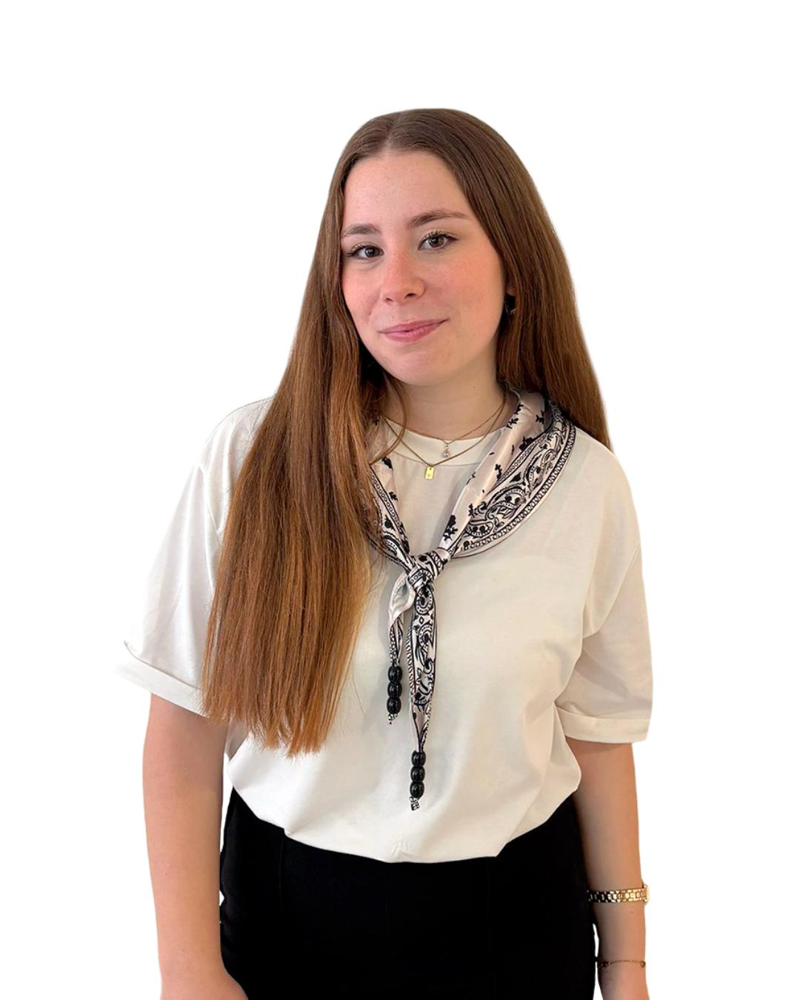
História
Stefan Sagmeister foi o ponto de partida e, ao mesmo tempo, a desculpa perfeita para eu levar este site para um lado menos óbvio.

Ao longo da sua carreira, desenvolveu projetos para clientes culturais e comerciais, incluindo capas de álbuns, identidades visuais e exposições internacionais. Paralelamente, criou projetos autorais que abordam temas como felicidade, beleza e ética no design, defendendo que a estética e o impacto emocional são componentes fundamentais da comunicação visual.
Sagmeister é amplamente reconhecido por expandir o papel do designer gráfico contemporâneo, demonstrando que o design pode ser simultaneamente funcional, conceptual e crítico.
Quando o professor, Francisco Mesquita, me deu o tema, eu conhecia o nome, mas não tinha noção da intensidade com que ele usa o corpo, o desconforto e a emoção como matéria de design. À medida que fui explorando o trabalho dele, percebi que não se trata só de fazer imagens “bonitas”, mas de criar experiências visuais que quase incomodam, que deixam marcas. Isso influenciou diretamente a forma como pensei este projeto.
Ao construir o site, quis fugir da ideia de portefólio limpinho e neutro: a paleta escura e quente, o ruído, a sensação de textura e as frases que não explicam tudo à primeira são escolhas inspiradas na forma como o Sagmeister transforma o design em algo físico. A própria estrutura do site reflete isso, porque cada secção funciona como um fragmento de narrativa e a aba dedicada a ele acaba por contaminar o resto.
Conhecer o trabalho do Sagmeister fez‑me olhar para o design gráfico como algo mais performativo e menos distante. Em vez de ver este site apenas como um exercício técnico, passei a encará‑lo como um pequeno gesto na mesma direção: usar o digital para guardar experiências visuais que não querem ser óbvias, que assumem a estranheza e o desconforto como parte da linguagem. Este projeto é, no fundo, o meu primeiro “ensaio” pessoal a partir das provocações que o trabalho dele me trouxe.
Texto gravado no corpo, uma das imagens mais icónicas e provocadoras de Sagmeister.

Um trabalho inicial de Sagmeister ligado à experimentação tipográfica em pedra.

No projeto da ciclovia em Bentonville, a mensagem ‘Now is better’ aparece no espaço público, ligando a ideia de progresso e bem‑estar à experiência física de andar de bicicleta pela cidade.

No relógio mecânico Ressence Type 3X, a frase ‘Now is better’ ocupa o mostrador, transformando um objeto de luxo numa lembrança constante de que o presente pode ser melhor do que pensamos.
Marca Visual
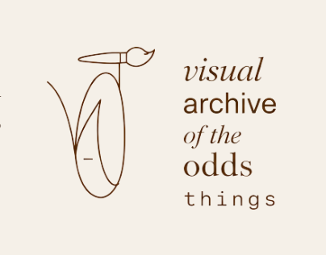
A marca visual deste projeto foi pensada como uma extensão da identidade do próprio site, procurando traduzir em linguagem gráfica a sua dimensão mais experimental, artística e pessoal. O logótipo parte de uma construção simples, mas com intenção expressiva, valorizando a relação entre forma, cor e linha como elementos fundamentais da comunicação visual.
A paleta cromática foi escolhida para reforçar o caráter criativo e menos convencional do projeto, criando contraste, energia e subtileza visual. A cor não funcionam apenas como decoração, mas como parte ativa da composição.
As linhas desenhadas no logótipo organizam a forma e conduzem o olhar de forma equilibrada. Ao mesmo tempo, acrescentam ritmo, movimento e liberdade visual.
A pesquisa de inspiração partiu de referências ligadas ao universo artístico, visual e editorial. Foram observadas formas associadas à pintura, ao desenho, ao arquivo e à organização de imagens. A ideia principal foi criar uma marca que não parecesse demasiado rígida ou institucional, mas sim próxima de um espaço criativo, experimental e pessoal.
As referências ajudaram a perceber que o logótipo deveria ter uma linguagem simples, com linhas leves e orgânicas, mantendo uma ligação direta ao gesto artístico e ao processo manual.
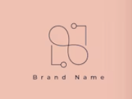
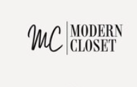
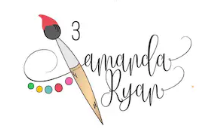
O nome Visual Archive of the Odds Things foi escolhido por representar a ideia de um arquivo visual composto por elementos estranhos, inesperados e fora do comum. A palavra “archive” remete para organização, memória e coleção, enquanto “visual” reforça a dimensão gráfica e imagética do projeto.
A expressão “odds things” acrescenta um lado mais experimental e curioso, sugerindo que o projeto reúne imagens, ideias e objetos visuais que não seguem uma lógica totalmente convencional.
.jpg)
O rascunho corresponde à fase inicial do processo criativo. Nesta etapa foram testadas várias ideias através de desenhos manuais, explorando símbolos ligados à pintura, ao gesto artístico e ao arquivo visual. Esta fase permitiu experimentar livremente antes de escolher a direção final.
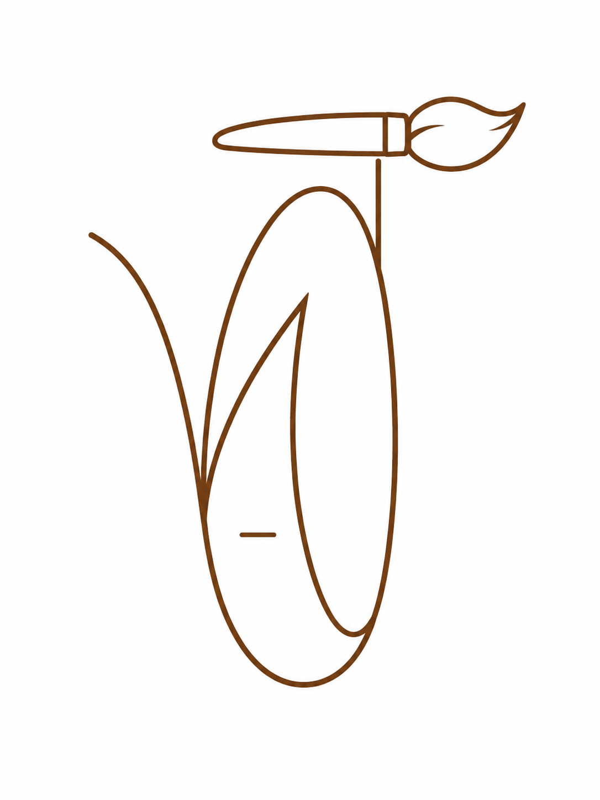
O vetor escolhido resulta da simplificação e limpeza do rascunho inicial. A versão final apresenta linhas mais controladas, uma composição equilibrada e melhor legibilidade, tornando o logótipo mais funcional para diferentes suportes digitais e impressos.
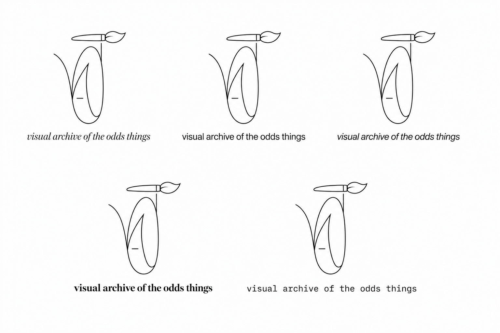
O estudo tipográfico apresenta cinco possibilidades diferentes para o nome da marca. Esta análise permitiu perceber como cada tipo de letra altera a personalidade visual do projeto, desde uma abordagem mais elegante até uma linguagem mais moderna ou experimental.
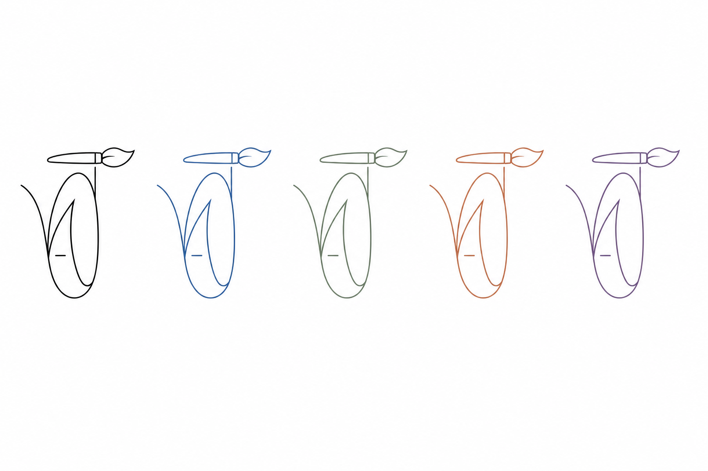
O estudo de cor mostra diferentes versões cromáticas aplicadas apenas ao logótipo. O objetivo foi testar como a identidade visual se comporta com cores distintas, mantendo a mesma forma e avaliando o impacto visual de cada opção.
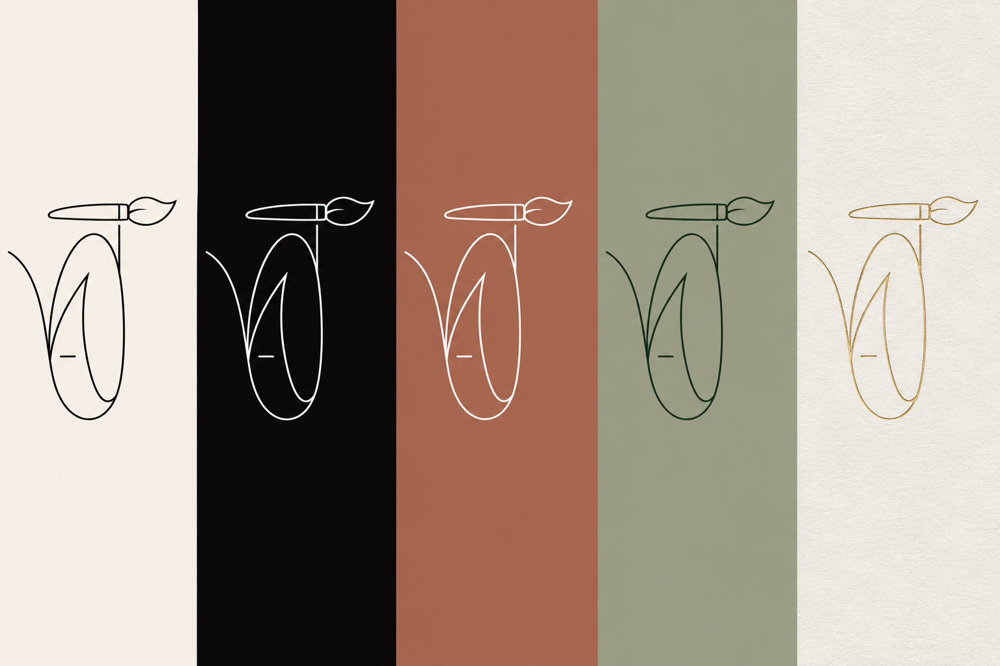
O estudo de contraste explora diferentes relações entre o logótipo e o fundo. Estas versões ajudam a perceber a legibilidade, a força visual e a adaptação da marca em contextos claros, escuros, neutros ou mais expressivos.

A sintaxe visual apresenta diferentes formas de combinar o símbolo com o nome da marca. Foram testadas composições verticais, horizontais e circulares, de modo a perceber qual a relação mais equilibrada entre imagem, texto, escala e hierarquia visual.
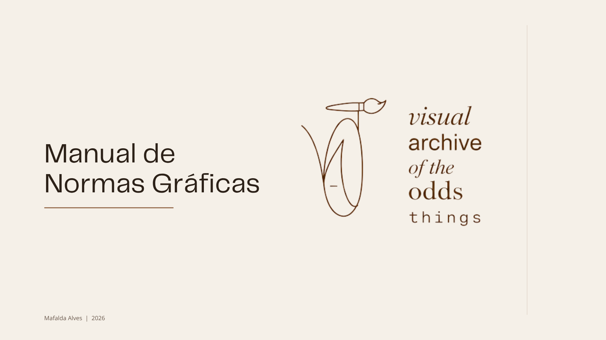
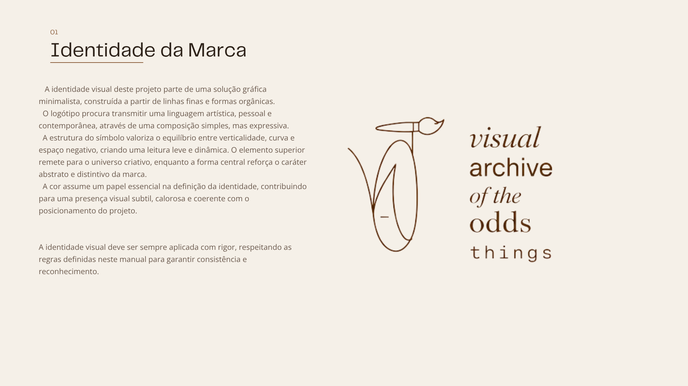
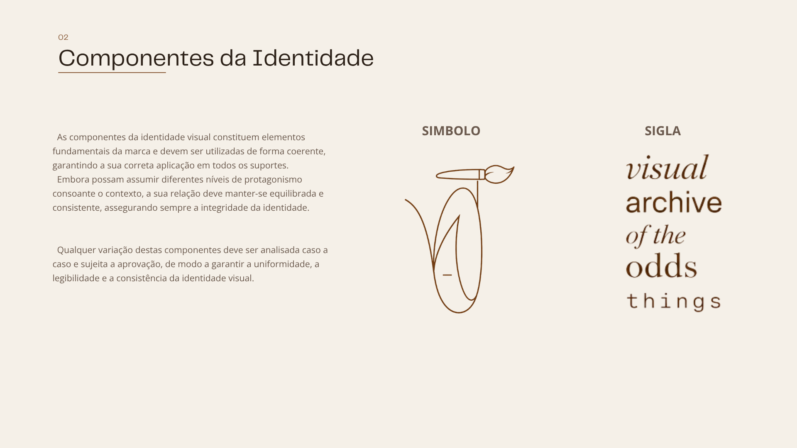
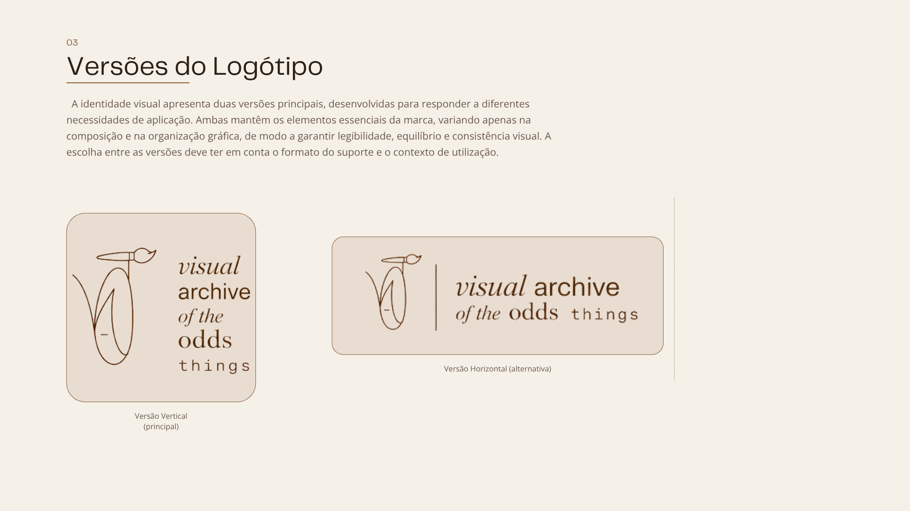
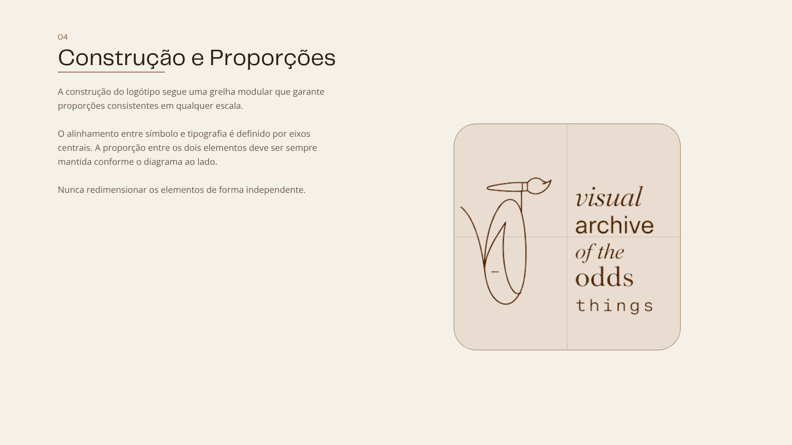
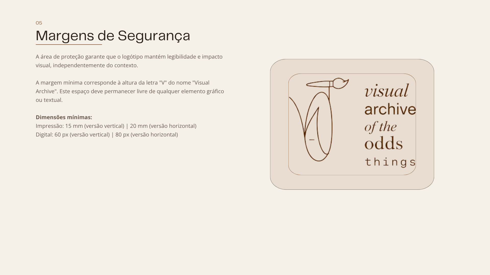
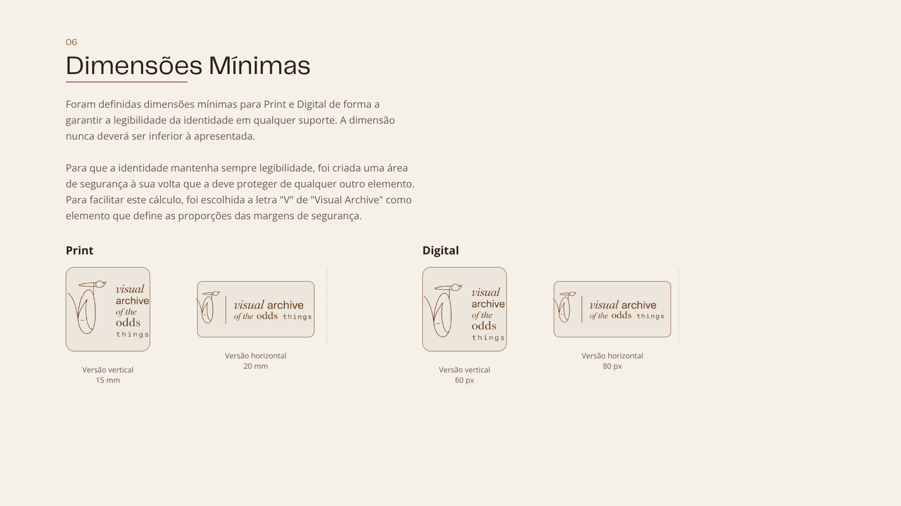
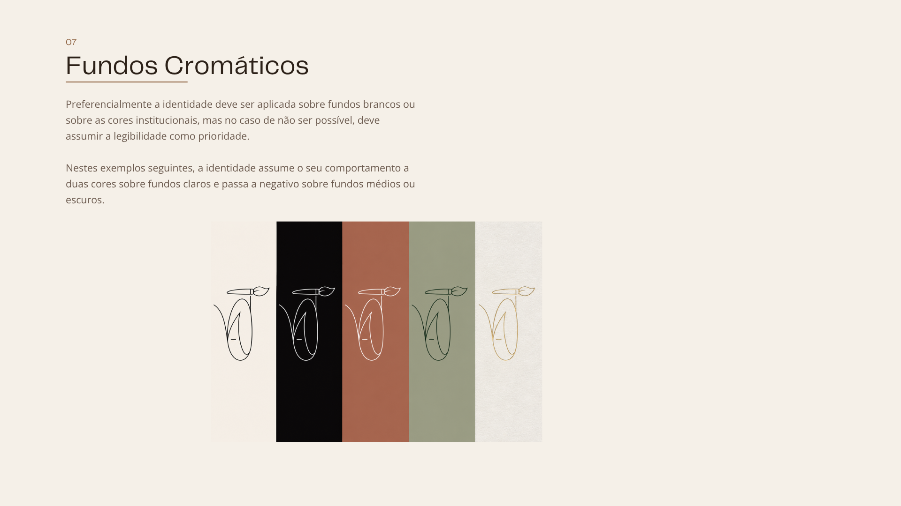
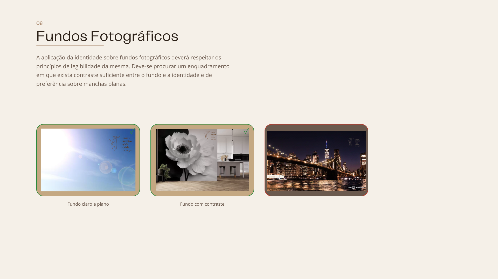
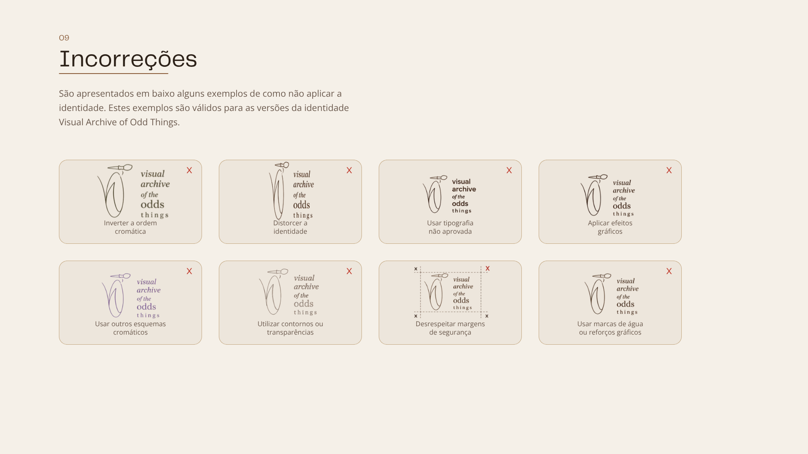
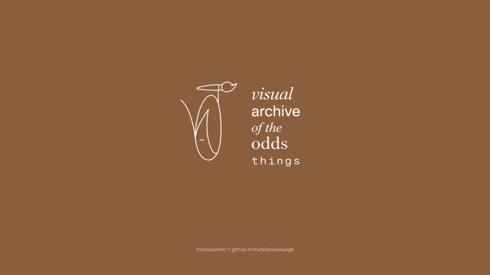
Cartaz
Cartaz desenvolvido para o Dia das Ciências da Comunicação, explorando o contraste entre consumo rápido e alimentação consciente. Mais abaixo tens as minhas ispirações e as diferentes versões de teste.
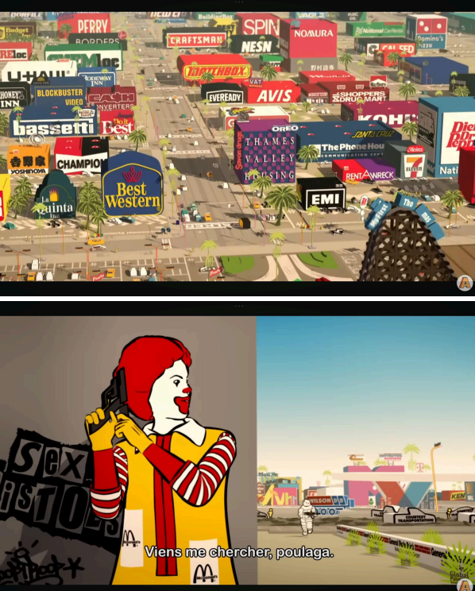
Este cartaz foi desenvolvido com o objetivo de representar visualmente o contraste entre dois estilos de alimentação completamente opostos: o fast food e o slow food. A ideia principal do projeto surgiu da necessidade de abordar um tema atual e presente no quotidiano das pessoas, relacionado com os hábitos alimentares e as consequências que estes podem ter na saúde e no estilo de vida.
A composição procura demonstrar a diferença entre uma alimentação rápida, associada ao consumo impulsivo, aos alimentos processados e à rotina acelerada da sociedade moderna, e uma alimentação mais natural e equilibrada, ligada ao bem-estar, à qualidade dos alimentos e à consciência alimentar. O cartaz pretende levar o observador a refletir sobre as escolhas que faz diariamente e sobre o impacto dessas escolhas no corpo e na qualidade de vida.
A divisão da composição em duas áreas distintas foi pensada para criar uma leitura imediata da mensagem. Cada lado representa um conceito diferente, permitindo comparar visualmente dois modos de alimentação e dois estilos de vida. O lado do fast food transmite excesso, rapidez e artificialidade, enquanto o lado do slow food comunica equilíbrio, tranquilidade e naturalidade.
O objetivo principal foi criar uma peça visual forte, apelativa e de fácil interpretação, capaz de captar rapidamente a atenção do público. Para isso, foram utilizados elementos gráficos e visuais que reforçam o contraste entre os dois conceitos e tornam a mensagem clara logo ao primeiro olhar.
A construção visual do cartaz baseia-se principalmente no uso do contraste, tanto ao nível das cores como da composição gráfica. A separação entre os dois lados foi fundamental para reforçar a oposição entre os conceitos apresentados, criando impacto visual e facilitando a compreensão da mensagem.
As cores utilizadas desempenham um papel importante na comunicação visual do cartaz. No lado associado ao fast food, predominam cores mais fortes e intensas, como vermelhos, amarelos ou tons saturados, normalmente ligados à rapidez, energia, excesso e consumo imediato. Estas cores ajudam a transmitir uma sensação de agitação e impulsividade, características frequentemente associadas à alimentação rápida e industrializada.
No lado do slow food, foram utilizadas cores mais suaves, naturais e equilibradas, relacionadas com frescura, saúde e tranquilidade. Tons verdes, cores orgânicas e elementos visuais mais leves contribuem para criar uma sensação de harmonia e bem-estar, reforçando a ideia de alimentação saudável e consciente.
As linhas e a organização dos elementos visuais também foram pensadas de forma estratégica. A composição apresenta uma divisão clara entre os dois lados, funcionando quase como uma fronteira visual entre dois estilos de vida distintos. Os elementos gráficos encontram-se organizados de maneira a orientar o olhar do observador e a criar equilíbrio dentro da composição geral.
O contraste entre imagens, texturas e formas ajuda a aumentar o impacto visual do cartaz. Enquanto um lado apresenta elementos mais caóticos, intensos e visualmente pesados, o outro transmite maior simplicidade, leveza e organização. Esta diferença visual reforça a dualidade entre os dois conceitos e torna a mensagem mais eficaz.
A tipografia foi escolhida de forma a complementar toda a identidade visual do cartaz, contribuindo para a legibilidade e para a força da comunicação gráfica. A combinação entre cores, contraste, composição e elementos visuais permite criar uma peça gráfica equilibrada, apelativa e facilmente compreendida pelo público.
Para desenvolver este cartaz, foram analisados vários cartazes editoriais e publicitários que utilizam contraste visual, composição dividida e cores fortes para transmitir mensagens sociais de forma rápida e impactante. (clica para aumentar a imagem)
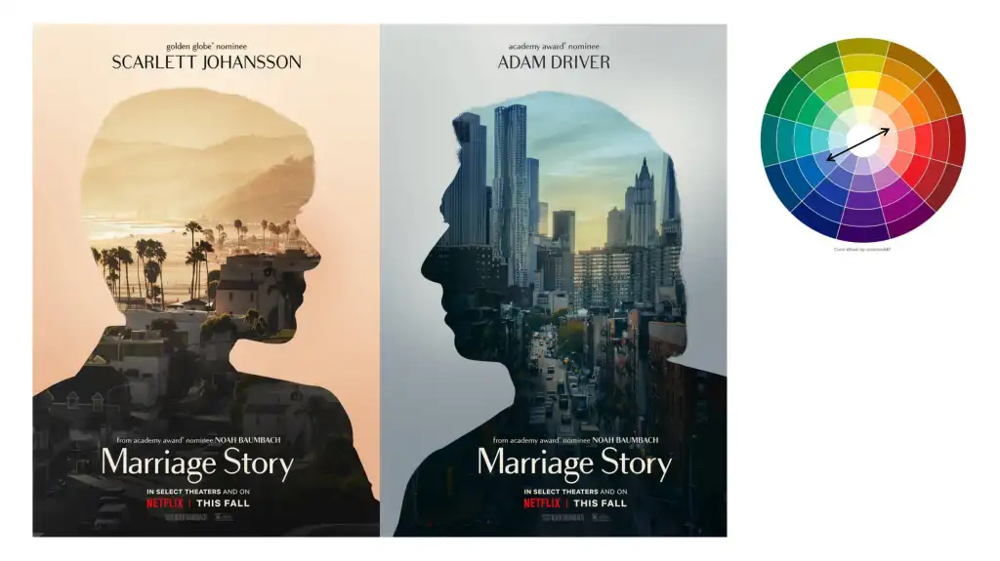
Referências que utilizam cores opostas para reforçar conflitos visuais.
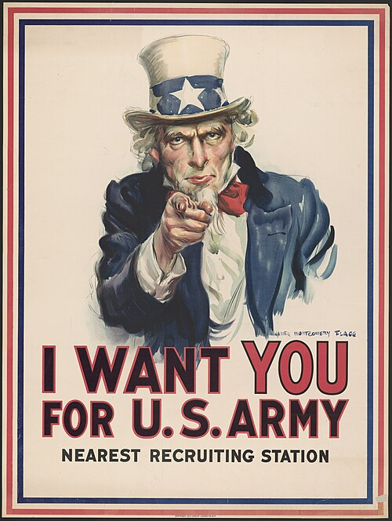
Cartazes com hierarquia visual baseada em texto de grande impacto.
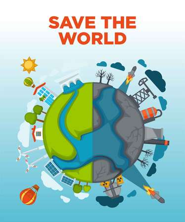
Exploração de estruturas diagonais e dualidade visual.
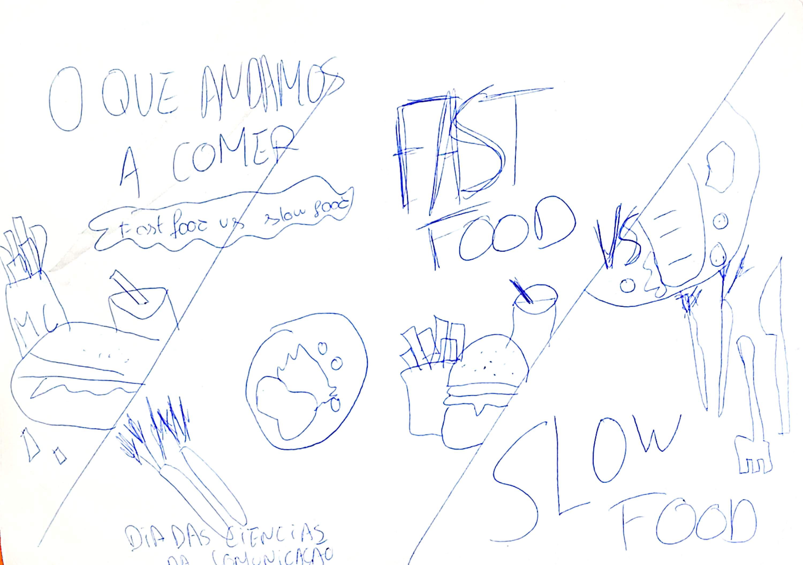
O rascunho foi a primeira fase do cartaz, onde testei a composição, a disposição dos elementos e a relação entre as duas metades da imagem.
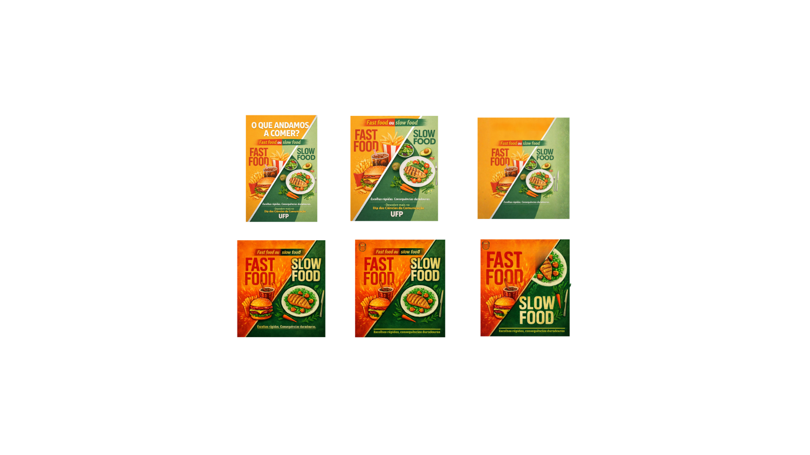
A sintaxe visual organiza os elementos do cartaz, enquanto a tipografia e a cor reforçam o contraste e a mensagem principal.
Notícias
Outros
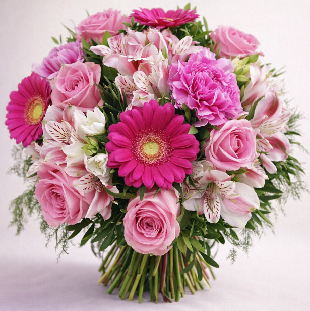
A minha cor preferida é o rosa. Esta escolha está relacionada tanto com o meu gosto pessoal como com o significado que esta cor pode transmitir na comunicação visual. A cor é um elemento fundamental da linguagem visual, pois tem a capacidade de chamar a atenção, provocar emoções e transmitir mensagens ao observador.
De acordo com o professor Francisco Mesquita, a cor impressiona, expressa e constrói significados, sendo um elemento essencial na forma como interpretamos imagens e mensagens visuais. O rosa resulta da mistura do vermelho com o branco, o que lhe dá características próprias. Enquanto o vermelho é geralmente associado à intensidade, energia ou paixão, o rosa apresenta uma versão mais suave dessas emoções.
Por isso, esta cor costuma estar ligada a ideias de delicadeza, carinho, sensibilidade e tranquilidade. Na comunicação visual, o rosa pode ser utilizado para transmitir proximidade emocional e criar uma sensação de conforto ou simpatia. Outra razão pela qual gosto da cor rosa é o seu impacto visual. Apesar de ser considerada uma cor suave, o rosa consegue destacar-se facilmente em diferentes composições gráficas.
Quando combinado com cores neutras, como o branco ou o cinzento, cria um contraste agradável e equilibrado, tornando o design mais atrativo e harmonioso. Além disso, o rosa está muitas vezes presente na natureza, por exemplo em flores como as rosas ou as cerejeiras, o que reforça a ideia de beleza e leveza associada a esta cor.
Para mim, o rosa transmite uma sensação de alegria, criatividade e calma. Por essa razão, considero que é uma cor que representa bem emoções positivas e que pode comunicar mensagens visuais de forma clara e agradável.

Logorama é daqueles vídeos que parecem uma confusão total no início, mas quanto mais se olha, mais sentido faz. Achei interessante a maneira como usam logótipos e marcas para construir literalmente tudo: personagens, prédios, ruas, carros… parece um mundo onde já não existe nada sem publicidade.
Visualmente, o que mais me chamou a atenção foi o exagero. Há cor, movimento e informação por todo o lado, quase ao ponto de cansar. Mas acho que essa é mesmo a intenção. O vídeo passa uma sensação de caos constante, muito parecida com a forma como hoje em dia somos bombardeados com marcas e imagens o tempo todo.
Também gostei da ideia de transformar marcas conhecidas em personagens. É estranho porque reconhecemos logo os logótipos, e isso mostra o quanto eles já fazem parte da nossa memória visual. Nem é preciso pensar muito para perceber quem é “bom” ou “mau”, porque o design das marcas já transmite personalidade sozinho.
Do ponto de vista do design gráfico, acho que o mais forte é precisamente essa mistura entre crítica e estética. O vídeo é visualmente divertido, mas ao mesmo tempo faz uma crítica ao consumismo e à dependência das marcas na sociedade atual. Tudo parece artificial, exagerado e comercial, mas ao mesmo tempo muito real.
No geral, achei uma peça criativa e diferente porque usa o design gráfico não só para ficar bonito, mas para passar uma mensagem. Mesmo sendo um vídeo antigo, continua atual porque hoje vivemos ainda mais rodeados por branding, publicidade e identidade visual.
Este projeto consistiu no desenvolvimento de um currículo infográfico, procurando transformar informação curricular numa peça visual clara, organizada e apelativa.
O processo incluiu pesquisa de referências, análise de currículos já existentes, criação de esboços e desenvolvimento da versão final.
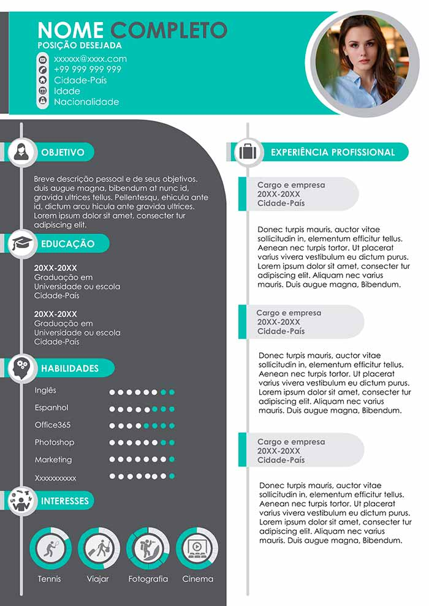

Foram analisados dois currículos infográficos com abordagens distintas, observando a hierarquia da informação, utilização de cor e organização dos elementos gráficos.
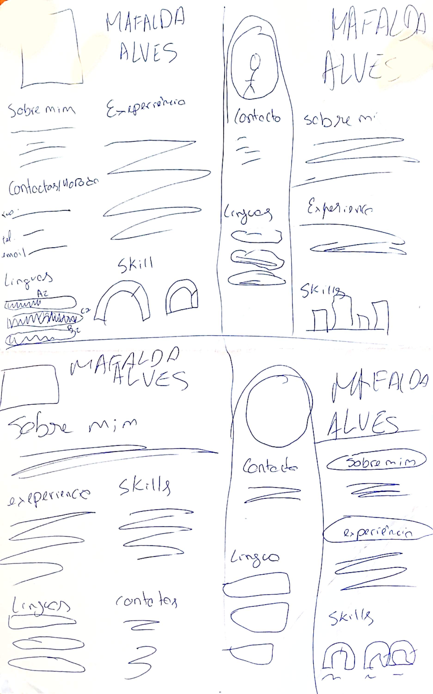
O rascunho permitiu testar a disposição da informação, a hierarquia visual e os elementos gráficos antes da construção da versão final.
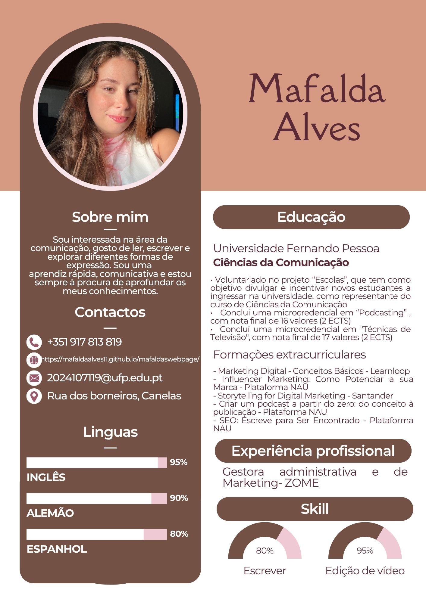
A versão final procura equilibrar legibilidade e identidade visual, utilizando recursos gráficos para destacar competências, formação e experiência de forma clara e atrativa.